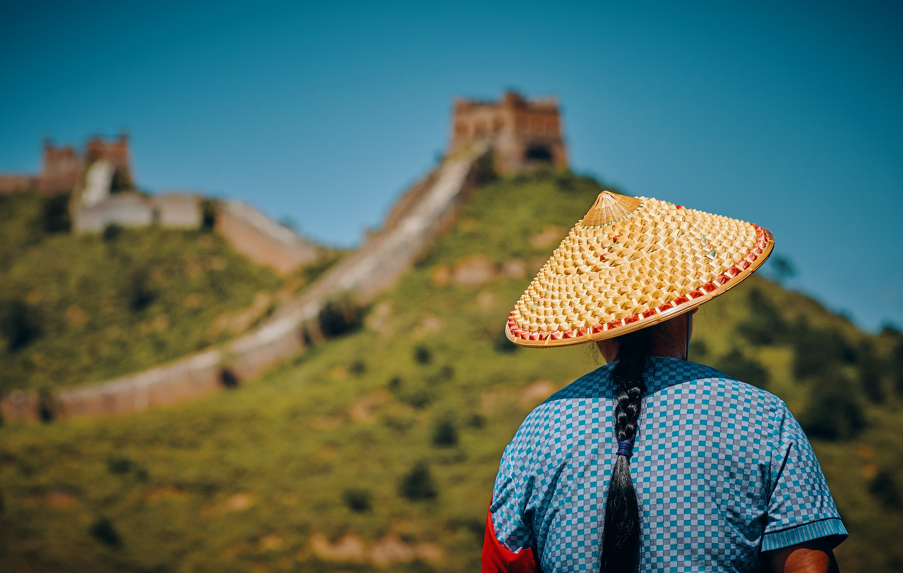
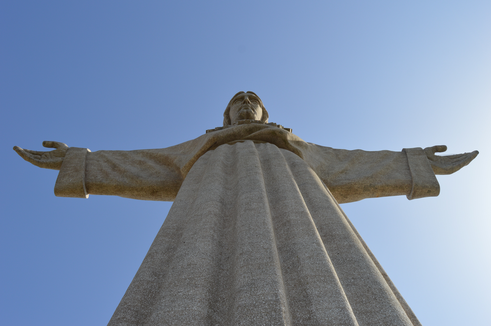
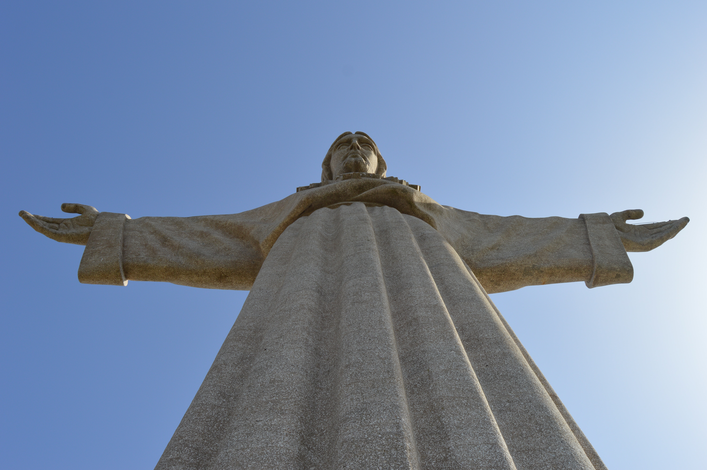
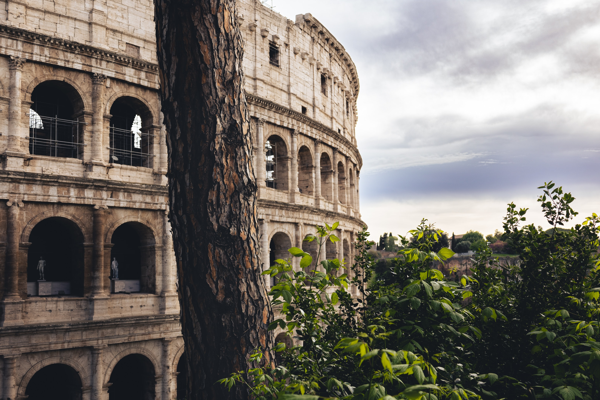
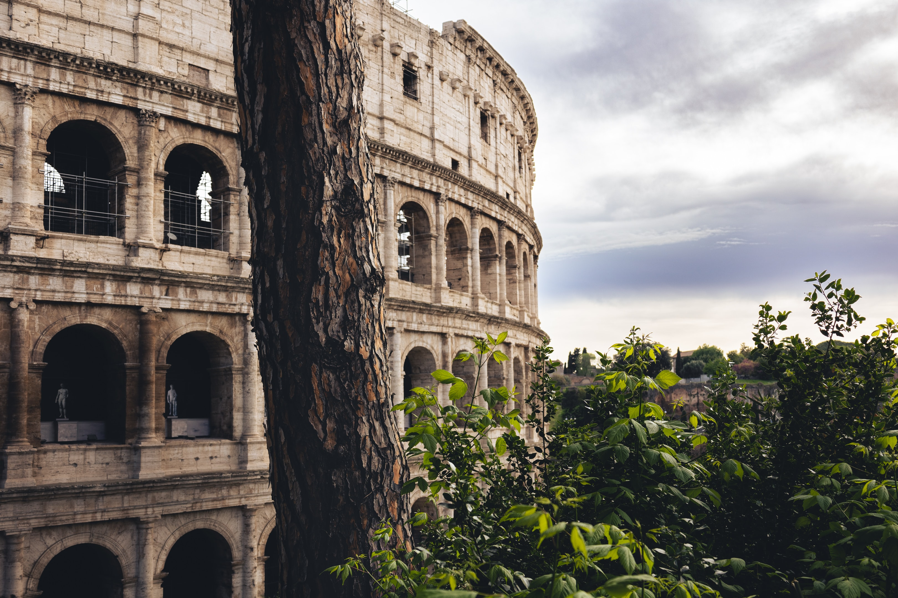

¡Recorre Online!
Pequeñas imágenes, grandes experiencias, ¿Qué esperas para vivir la tuya?
Machu Pichhu, rodeado de naturaleza. Se ubica en el país de Perú.

Chichen Itza, catalogada como Maravilla del Mundo Moderno, belleza en todos sus aspectos


La Muralla China fue contruida inicialmente para separa territorios pero hoy en día miles de personas se reúnen aquí.

El Cristo Redentor es una representacion de Jesucristo, una estatua inmensa que llama la atención de miles de turistas al año.
 


Petra es lugar idóneo para despejarte el mundo, cuando quieras relajarte sabes a donde viajar.


El Coliseo Romano era antigua un lugar de duelos, guerrillas y combates donde el más fuerte vence, hoy en dia sigue en pie.
 


El Taj Mahal es una belleza de contrucción y arquitectura, sus detalles, hasta los más mínimos, son sorprendentes.